Writing Matlab mex-files with CUDA enabled -- A complete example with a total variation denoising problem
Contents
Introduction
It has been nearly 7 years now, that I ask my students to program on the GPU. A small fraction of them were successful and reached speed-ups of order 100, which is great. Unfortunately, using the GPU and launching programs with this technology seemed out of reach for me. The efforts I had to spend to understand the basics of this technology seemed hard and time consuming and I was therefore reluctant to go for it. I guess the same situation applies to many researchers or engineers. This is what motivated me to write this webpage. Its goals is to:
- alleviate the fear of GPU, by relating my experience with this technology.
- make a clear comparison with standard multi-core programming based on OpenMP.
- provide useful tips to other people willing to experiment massively parallel programming. In particular, I will relate what I did to set up my machine on Ubuntu 16.04. I will also give a complete example with Matlab mex-files and CUDA.
Overall, it took me about a full week to:
- write a good Matlab code to restore images degraded by stationary noise. The code is based on the following paper and its descendents:
Variational algorithms to remove stationary noise. Application to microscopy imaging. J. Fehrenbach, P. Weiss and C. Lorenzo, IEEE Image Processing Vol. 21, Issue 10, pages 4420 - 4430, October (2012). http://www.math.univ-toulouse.fr/~weiss/Publis/IEEEIP_VSNR_Final.pdf
- write a C-mex file with OpenMP support to make comparisons with Matlab.
- write a CUDA C-mex file on a massively parallel architecture.
- make comparisons between all these approaches.
- publish this website.
This is not too bad since I'm just a good (not proficient) programmer. In fact it would be a crime not to mention that I was helped by Morgan Gauthier, an intern student in computer science in his second year. We discovered many subtelties together and I wouldn't have had the courage to test this alone. I thank him here warmly. I hope this webpage will be helpful for you! Don't hesitate to cite my papers in case you enjoyed this, since this is the only retribution I can dream of :).
Why CUDA and Matlab?
I hear some of you shouting at me: "What? You preferred the proprietary languages Matlab and CUDA to free and open languages such as Python and OpenCL? You should be banned from academia for this!"
The main reason why I chose this configuration is simplicity. I am really more familiar with Matlab than Python (and I think it is still a really great programming language and interface). In addition, comments on the web overall converge to the same conclusion: it is easier to work with CUDA than OpenCL to start with and the performance is usually better. These reasons are definitely not very deep and might be wrong in the long term, but my life is really hectic, so, to not lose time, I stuck to that choice.
Setting up the environment
The programs I used for comparisons are provided here: https://github.com/pierre-weiss/VSNR_CUDA_MEX
You'll find all the functions in this toolbox and you might learn something about CUDA with mex-files by looking at the .cu files.
I think that one of the most complicated issues with GPU programming for a beginner is to set up a correct environment. This is well documented on the web, however, most users (including me) will forget a key step/option and screw up their system. In my case, I am using Linux and more particularly Ubuntu 16.04.
To use my codes and make comparisons with openMP, you will first need to install the fftw library. You can skip this step if you don't want to make comparisons.
First download the fftw library here http://www.fftw.org/download.html. To install it you can use the following commands in a terminal.
./configure --enable-threads --enable-openmp --enable-float CFLAGS="-fopenmp -fPIC" make sudo make install
The next step is to install the CUDA drivers and toolboxes. Unfortunately, this turned out to be complicated. One problem is that I decided to use the latest version of CUDA (CUDA 8.0). Matlab 2016b on its side (at the time I publish this post) only accepts CUDA 7.5. So, if you don't have a NVIDIA PASCAL card, try installing CUDA 7.5 instead if you intend using Matlab and CUDA. I still managed to compile my mex files with specific commands provided here: https://github.com/pierre-weiss/VSNR_CUDA_MEX/blob/master/mex_all.m.
After trying to install the .sh run file provided on NVIDIA's website, I screwed my graphic's installation completely and it took me a long time to restore my system. I won't write another blog about how to install CUDA on Linux. You can have a look there for instance: http://kislayabhi.github.io/Installing_CUDA_with_Ubuntu/, for a serious presentation.
The denoising problem
I will now describe the optimization problem I wish to solve. This is a problem that is quite typical in inverse problems and especially imaging.
Given a noisy image 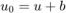, we wish to recover 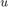. The noise is assumed to be stationary and reads 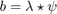, where 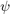 is a known filter and 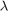 is a random vector with i.i.d. components. We showed in
Processing stationary noise: model and parameter selection in variational methods. J. Fehrenbach, P. Weiss, SIAM Journal on Imaging Science, vol. 7, issue 2, (2014). http://www.math.univ-toulouse.fr/~weiss/Publis/Journals/2013/Parameter_Selection_VSNR.pdf
that a good approach consists of solving the following total variation regularized convex optimization problem:
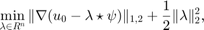
where stands for the discrete gradient operator and 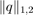 is the isotropic 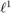-norm of the vector field 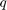.
Among the various optimization routines available to solve this problem, it turns out that the ADMM is the most efficient. This is a well documented approach, described here for instance http://www.math.univ-toulouse.fr/~weiss/Publis/ICM_09-16.pdf in the field of imaging. It requires the use of Fast Fourier Transforms. The MATLAB code is provided in function https://github.com/pierre-weiss/VSNR_CUDA_MEX/blob/master/denoise_VSNR_ADMM2.m. You can have a look at it. Observe that this is an ideal code for GPU since it is only made of simple operations (additions, multiplications, FFTs,...) of images. Before going further, let us show how the algorithm works.
We first create a synthetic image .
close all;
n0=512;
n1=512;
[X,Y]=meshgrid(linspace(-1,1,n0),linspace(-1,1,n1));
u=double(sqrt(X.^2+Y.^2)<=0.8);
Then, we set-up an elongated filter.
psi=zeros(size(u)); psi(1,1:20)=1; psi=psi/sum(psi(:));
Define the noise component.
lambda=randn(size(u));
b=ifftn(fftn(lambda).*fftn(psi)); % That's a convolution between lambda and psi
And finally obtain the noisy image.
u0=u+b; figure(1);colormap gray;imagesc(u);title('Original image');axis equal;axis off; figure(2);colormap gray;imagesc(u0);title('Noisy image');axis equal;axis off;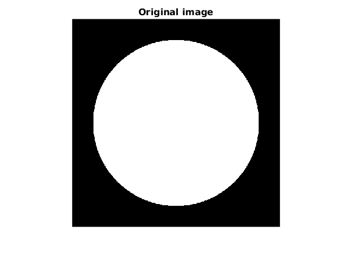 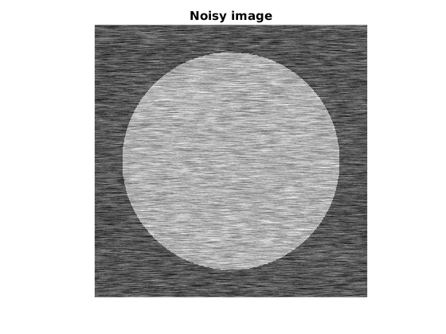
We now denoise the image using VSNR.
beta=10; nit=50; noise_level=4; tic;u1=denoise_VSNR_ADMM2(u0,noise_level*psi,nit,beta);toc; figure(3);colormap gray;imagesc(u1);title('Restored image');axis equal;axis off;
Elapsed time is 0.635497 seconds.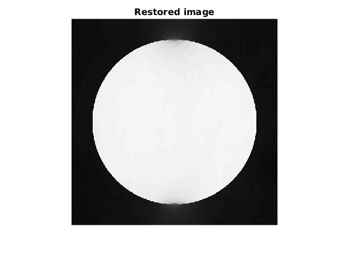
Timing Matlab's code
Ok that's a pretty nice result and it was fast! What are the specifications of my machine? It is a DELL Inspiron T7610 with 20 cores. Many users are not aware of this, but Matlab uses parallel programming by default. What would happen with just 1 core? We can test that with the command maxNumCompThreads. But first, we will turn to larger images.
n0=2048; n1=2048; [X,Y]=meshgrid(linspace(-1,1,n0),linspace(-1,1,n1)); u=double(sqrt(X.^2+Y.^2)<=0.8); psi=zeros(size(u)); psi(1,1:20)=1; psi=psi/sum(psi(:)); lambda=randn(size(u)); b=ifftn(fftn(lambda).*fftn(psi)); u0=u+b;
Now, let's specify that we just want 1 thread and then 20 threads.
disp('MATLAB 1 THREAD') maxNumCompThreads(1);tic;u1=denoise_VSNR_ADMM2(u0,noise_level*psi,nit,beta);toc;time(1)=toc; disp('MATLAB 20 THREADS') maxNumCompThreads(20);tic;u2=denoise_VSNR_ADMM2(u0,noise_level*psi,nit,beta);toc;time(2)=toc;
MATLAB 1 THREAD Elapsed time is 60.010845 seconds. MATLAB 20 THREADS Elapsed time is 13.441223 seconds.
Notice that we obtained a significant speed-up by doing basically nothing, but buying a very expensive machine. This being said, a speed-up of 4-5 is not so good with 20 cores. According to Amdahl's law, it means that around 80 percent of the code is parallelized.
Timing mex-C code
The next step is to see what happens with a C-mex file. I have implemented one in https://github.com/pierre-weiss/VSNR_CUDA_MEX/blob/master/VSNR_ADMM_2D.cpp. To compile it, run the following command after a clean install of the fftw library.
mex '-L/usr/local/lib' -lfftw3_omp -lfftw3 -lm VSNR_ADMM_2D.cpp CXXFLAGS="\$CXXFLAGS -fopenmp" LDFLAGS="\$LDFLAGS -fopenmp"
Now we can try the C-file with 1 or 20 cores.
maxNumCompThreads(1);tic;u3=VSNR_ADMM_2D(u0,noise_level*psi,nit,beta);toc;time(3)=toc;
VSNR2D - ADMM. Working with 1 threads Elapsed time is 18.390134 seconds.
Compared to the Matlab code running on 1 core, we gained a factor 3. That's nice, but not so interesting, given the time to program a good mex-C code. Now what happens with 20 threads?
maxNumCompThreads(20);tic;u4=VSNR_ADMM_2D(u0,noise_level*psi,nit,beta);toc;time(4)=toc;
VSNR2D - ADMM. Working with 20 threads Elapsed time is 3.366254 seconds.
That's again a factor 3 compared to Matlab with 20 cores. This is significant, but once again, maybe not worth the effort. Now let's turn to GPU.
Timing Matlab GPU code
In this experiment, we will be using a Tesla K20C (2496 processors). Matlab made significant progresses on parallel programming in its last versions. It is now very easy to use GPU programming. The performance of GPU programming strongly depends on whether single or double precision arrays are used. The first step to use it is to copy the arrays on the GPU memory with the function gpuArray.
gu0d=gpuArray(u0); gpsid=noise_level*gpuArray(psi); gu0s=gpuArray(single(u0)); gpsis=noise_level*gpuArray(single(psi));
The modifications that have to be done in the MATLAB code to get good performance are really minimalist. Basically, we only need to initialize the variables on the GPU instead of the CPU. A typical difference between a CPU and GPU file is as follows.
- On the CPU: d1=zeros(size(u0));
- On the GPU: d1=gpuArray(single(zeros(size(u0))));
You can compare the codes https://github.com/pierre-weiss/VSNR_CUDA_MEX/blob/master/denoise_VSNR_ADMM_GPU_SINGLE.m and https://github.com/pierre-weiss/VSNR_CUDA_MEX/blob/master/denoise_VSNR_ADMM2.m to see that nearly nothing has changed.
That takes less than 5 minutes to convert the code, which is great. Now what about performance?
disp('MATLAB GPU DOUBLE') tic;gu5=denoise_VSNR_ADMM_GPU_DOUBLE(gu0d,gpsid,nit,beta);toc;time(5)=toc; u5=real(gather(gu5)); disp('MATLAB GPU SINGLE') tic;gu6=denoise_VSNR_ADMM_GPU_SINGLE(gu0s,gpsis,nit,beta);toc;time(6)=toc; u6=real(gather(gu6));
MATLAB GPU DOUBLE Elapsed time is 2.301445 seconds. MATLAB GPU SINGLE Elapsed time is 1.161917 seconds.
Notice that we used the function gather to copy the array from the GPU to the CPU. I really find that Matlab's gpuArrays are great. With a minimal effort, we gained a significant speed-up compared to MATLAB on a single core. We also gained a significant speed-up compared to MATLAB on 20 cores. Remembering that a graphics card is nearly an order of magnitude cheaper than a standard multi-core architecture, this really means the GPU is worth the money!
Timing C-GPU code
Let's now turn to the last test: a CUDA-C code interfaced with Matlab using mex. The codes for single precision and double precision are https://github.com/pierre-weiss/VSNR_CUDA_MEX/blob/master/VSNR_ADMM_2D_GPU_SINGLE.cu and https://github.com/pierre-weiss/VSNR_CUDA_MEX/blob/master/VSNR_ADMM_2D_GPU_DOUBLE.cu. Since I use CUDA 8.0, which is not supported by Matlab yet, the compilation is complicated. You will find the commands I used for compilation in the file https://github.com/pierre-weiss/VSNR_CUDA_MEX/blob/master/mex_all.m. I found it - by chance - on the web. To launch VSNR on the GPU, we need to specify the number of blocks and the number of threads per blocks.
dimGrid=2048;dimBlock=2048; tic;gu7=VSNR_ADMM_2D_GPU_SINGLE(gu0s,gpsis,nit,beta,dimGrid,dimBlock);toc;time(7)=toc; u7=real(gather(gu7)); dimGrid=2048;dimBlock=2048; tic;gu8=VSNR_ADMM_2D_GPU_DOUBLE(gu0d,gpsid,nit,beta,dimGrid,dimBlock);toc;time(8)=toc; u8=real(gather(gu8));
VSNR2D - ADMM - GPU Elapsed time is 0.217648 seconds. VSNR2D - ADMM - GPU Elapsed time is 0.413880 seconds.
Comparisons and discussion
Ok, it is time to summarize the acceleration factors.
fprintf('1) Acceleration MATLAB multithread: %3.2f\n',time(1)/time(2)) fprintf('2) Acceleration C 1 thread: %3.2f\n',time(1)/time(3)) fprintf('3) Acceleration C multithread: %3.2f\n',time(1)/time(4)) fprintf('4) Acceleration MATLAB GPU - DOUBLE: %3.2f\n',time(1)/time(5)) fprintf('5) Acceleration MATLAB GPU - SINGLE : %3.2f\n',time(1)/time(6)) fprintf('6) Acceleration C GPU DOUBLE: %3.2f\n',time(1)/time(8)) fprintf('7) Acceleration C GPU SINGLE: %3.2f\n',time(1)/time(7))
1) Acceleration MATLAB multithread: 4.46 2) Acceleration C 1 thread: 3.26 3) Acceleration C multithread: 17.83 4) Acceleration MATLAB GPU - DOUBLE: 26.07 5) Acceleration MATLAB GPU - SINGLE : 51.64 6) Acceleration C GPU DOUBLE: 144.95 7) Acceleration C GPU SINGLE: 275.59
On this example, we see that we reached a speed-up of 300 compared to Matlab on a single core. That's huge. This is the difference between a code that can be used in production and a code that will only be used once or twice for an academic result. This really has to be related to the time needed to develop the application. The following list summarizes everything:
Make_Table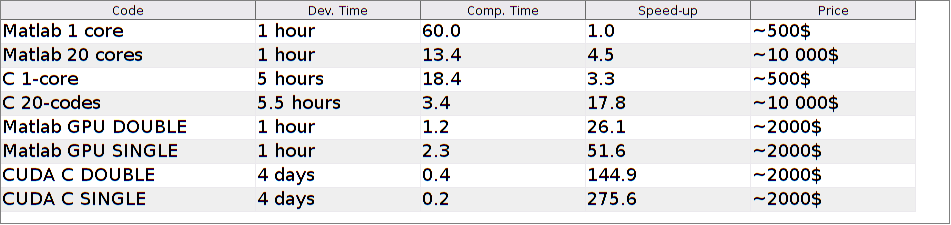
The prices indicated in the above table roughly corresponds to what I paid for my workstation. The development time corresponds to what I spent this time, but you need to remember that it was my first try with CUDA. I therefore had to learn a lot of things. I guess I would be much faster now that I have some experience. In any cases, I think it is a good practice to do things in this order:
- Program in Matlab or any other high-level language (here 1 hour).
- Program in C (here 5 hours).
- Add OpenMP support (here 20').
- Program in CUDA (here 4 days). This last step could probably be reduced to - say - 5 hours with more experience.
If you follow this order (which seems good to me), you see that the difference from a simple Matlab code (1 hours) to a CUDA C-code (at best 11 hours) is huge. Using the much simpler Matlab GPU programming is therefore a good alternative to my point of view, though it is about 7 times slowlier at runtime.
Overall, I think that I will use GPU more and more in the future. The development time is definitely much longer, but then, the testing period is really shorter. All in all, I believe it is a very good practice to use GPU programming once the core of the algorithm is stabilized.
Also remember that this application was perfectly suited for GPU. It is not clear at all that you'll obtain the same speed-ups in your applications.
Finally, I didn't intend to advertise Matlab and NVIDIA at first, but this experiment convinced me that their products are really nice. I should try a mix of OpenCL ans Python in the future to possibly advertise non commercial rivals!
That's the end of this discussion. I hope it may help or motivate some people to try GPU programming for their past or future projects.
Cheers and happy new year,
Pierre Weiss,
January, 4th of January 2017.